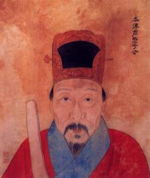

于谦
 于谦（1398年5月13日－1457年2月16日），字廷益，号节庵，汉族，浙江杭州府钱塘县（今浙江省杭州市上城区）人。明朝名臣、民族英雄。
永乐十九年（1421年），于谦登进士第。宣德元年（1426年），以御史职随明宣宗平定汉王朱高煦之乱，因严词斥责朱高煦而受宣宗赏识，升为巡按江西，颂声满道。宣德五年（1430年），以兵部右侍郎巡抚河南、山西等地。明英宗时因入京觐见时不向权臣王振送礼，遭诬陷下狱，因两省百姓、官吏乃至藩王力请而复任。土木之变后，英宗兵败被俘，他力排南迁之议，坚请固守，升任兵部尚书。明代宗即位，整饬兵备，部署要害，亲自督战，率师二十二万，列阵北京九门外，抵御瓦剌大军。瓦剌太师也先挟英宗逼和，他以“社稷为重，君为轻”，不许。也先无隙可乘，被迫释放英宗。和议后，于谦仍积极备战，挑选京军精锐分十团营操练，又遣兵出关屯守，边境得以安宁。当时朝务繁杂，于谦独运征调，合乎机宜。其号令明审，令行政达。他忧国忘身，口不言功，平素俭约，居所仅能遮蔽风雨。但因个性刚直，招致众人忌恨。
天顺元年（1457年），英宗复辟，大将石亨等诬陷于谦谋立襄王之子，致使其含冤遇害。明宪宗时，于谦被复官赐祭，弘治二年（1489年），追谥“肃愍”。明神宗时，改谥“忠肃”。有《于忠肃集》传世。《明史》称赞其“忠心义烈，与日月争光”。他与岳飞、张煌言并称“西湖三杰”。
| 本 名 | 于谦 | 别 称 | 于忠肃、于肃愍、于少保 | 字 号 | 字廷益,号节庵 | 所处时代 | 明朝 |
| 民族族群 | 汉族 | 出生地 | 浙江杭州府钱塘县 |
| 出生时间 | 1398年5月13日 | 去世时间 | 1457年2月16日 |
| 主要作品 | 《石灰吟》《节庵诗文稿》 | 主要成就 | 组织北京保卫战；改革军制 |